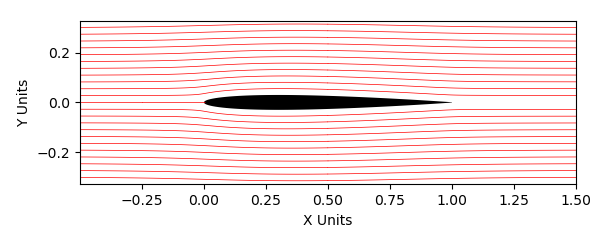
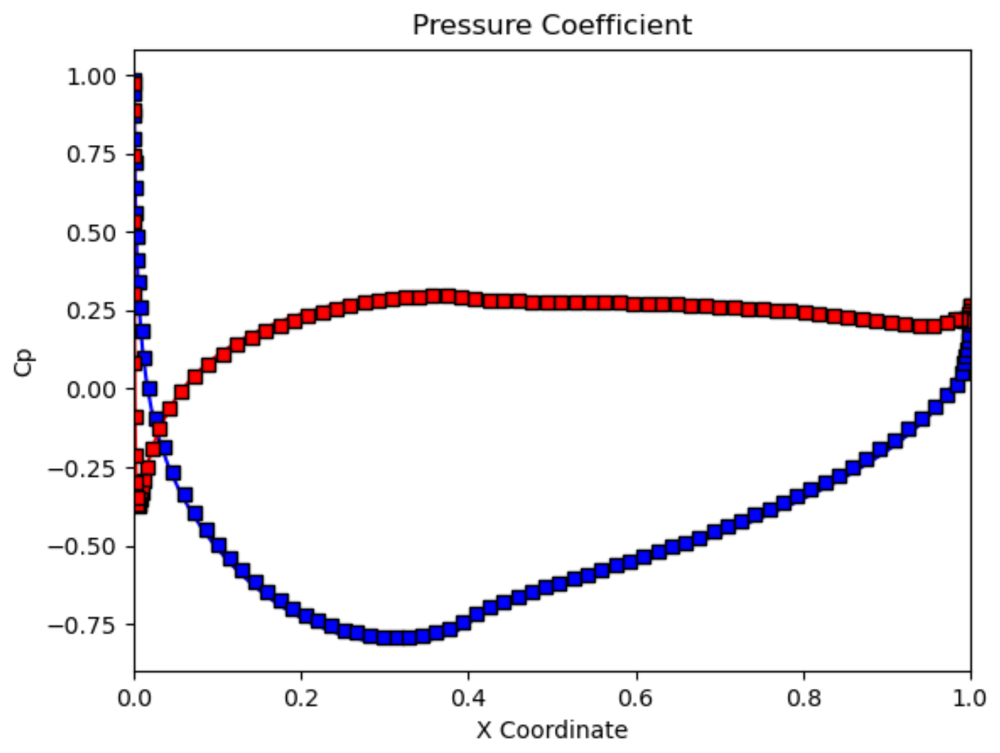

11 / Aerodynamics & design research / Completed team study
AE311 · Real-world problem lead · Three-person team
Comparing glider airfoil shapes with panel methods and XFOIL
A glider’s airfoil must be chosen in the context of the whole wing and its flight conditions. I led the design research that narrowed this broad question into a comparison of four NACA sections. The team then used a Python panel method to show how camber, thickness, and angle of attack changed lift and pressure across sixteen cases.
- My contribution
- Glider design research, tradeoff framing, airfoil-selection context, and report coauthorship
- Tools
- Design research · Panel methods · NACA airfoils · XFOIL
- Outcome
- NACA 6412 had the highest modeled lift in the 16 tested cases

Choose a question the analysis can answer
My research surveyed glider development and modern design choices, including airfoil shape, aspect ratio, winglets, and wing configuration. The challenge was to connect these interacting choices to a focused investigation the team could complete with potential-flow methods.
We concentrated on airfoil geometry. NACA 0006, 0012, 6406, and 6412 supplied thin/thick and symmetric/cambered pairs; testing each at −3°, 0°, 3°, and 6° created sixteen cases. This gave the numerical work a design purpose and a comparison structure, rather than an arbitrary set of airfoils.
Compare a computed flow field with a reference
The team’s combined source/vortex panel method enforced an impermeable surface and the Kutta condition. Surface pressure and circulation provided routes to lift, while geometry, streamline, and pressure plots helped explain the flow field. Pressure distributions were compared with XFOIL as a reference.
Jackson Rees was the technical lead and implemented the Python solver, adapted from JoshTheEngineer as credited in the report. I led the design research and helped connect practical glider considerations to the team’s analysis and report.


Explain what the geometry changed
Cambered sections produced positive lift at zero incidence; NACA 6412 had the highest lift coefficient in the tested cases.
The symmetric sections were approximately at zero lift at zero incidence, while the cambered sections produced positive lift. NACA 6412 returned a reported lift coefficient of about 0.729 at zero degrees. The pressure plots provided a visual explanation for these differences, connecting the tabulated coefficients back to the airfoil shape.
Carry the result back to the design decision
The research and analysis together support an informed preliminary comparison of airfoil behavior. They also make clear which important glider questions remain unanswered: the steady, inviscid, attached two-dimensional model cannot predict stall, viscous drag, or complete-aircraft glide performance.
My contribution demonstrates technical research and problem framing: identifying relevant design variables, connecting a broad system goal to an achievable analysis, and explaining the limits of the evidence. The report’s highest modeled lift coefficient is useful comparison evidence, but is not enough on its own to select the best overall glider.